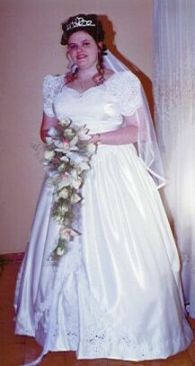
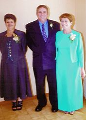
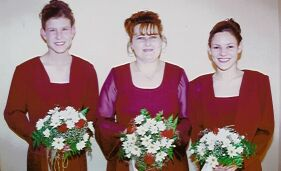
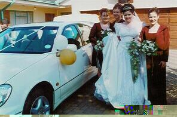

[Home] [Introduction] [Preperation] [Church] [Just Married] [Reception] [Honeymoon]
Mother of the Bride - Avel Roelofsz
Father of the Bride - Len Roelofsz
Mother of the Bride 2 - Rose Roelofsz
Maid of Honour - Jacky Smith
Bridesmaids - Susannah O'Brien & Kerry Ann Glen
 
At this point, my nerves were still under-control.
My parents were really so supportive even though we landed up being rushed to get from Johannesburg to Vereeniging in time to get ready for the church.

My Bridesmaids and Maid of Honour, made me really feel special. They were so helpful, and I
don't think that I would have made it to the church on time.

My brother-in-law Kurt really surprised me that day. When I went to get in the car, instead of
his car standing there(it was supposed to be a BMW), he had organised a White Lexus. I almost started
crying. It was a really special thing to do.
[Home] [Introduction] [Preperation] [Church] [Just Married] [Reception] [Honeymoon]